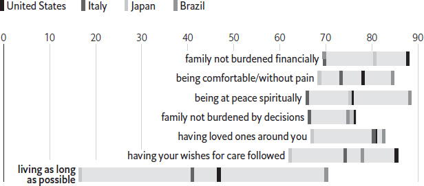
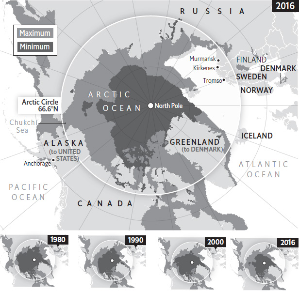
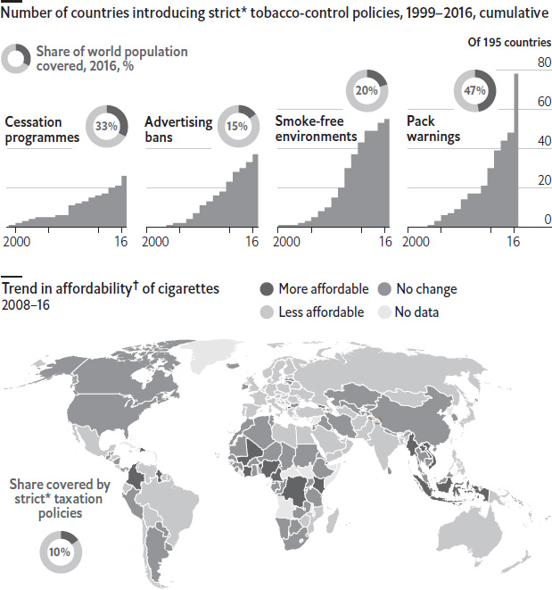
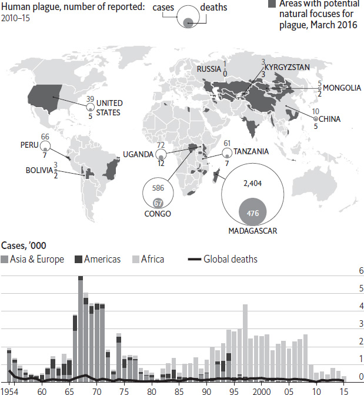
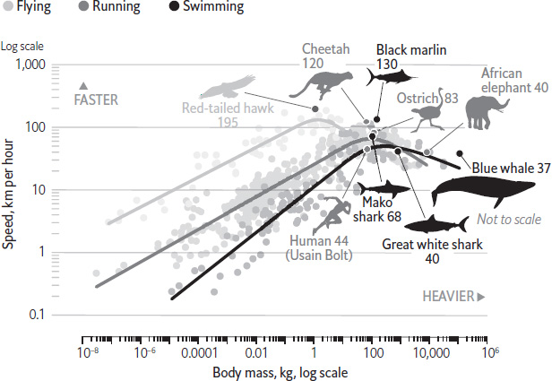

The vampire jokes write themselves. In the past few years a steady trickle of scientific papers has suggested something straight out of an airport horror novel: that the blood of young animals, infused into the old, has rejuvenating effects. Scientists are excited enough that at least two clinical trials are being undertaken in humans. But is it true? And if it is, how does it work?
The answer to the first question seems to be a qualified yes, at least in animals. The rejuvenating effects of young blood are seen when lab mice are joined together in a rather gruesome procedure called parabiosis. That involves making cuts in the skin of two animals, then suturing them together at the site of the wound. As the cuts heal, the pair’s blood vessels grow together and merge. The result is two animals that share a circulatory system, with both hearts pumping both sets of blood around both bodies. Doing this with an old mouse and a young mouse has some spectacular effects. As with humans, old mice have a harder time than younger ones healing from injuries. But link an old mouse to a young one and it becomes able to repair muscle injuries nearly as well as its younger counterpart. Similar benefits are seen in liver cells and the nervous system. And it works in reverse, too: old blood can have a decrepifying effect on the young.
Exactly how this all works is much less clear. The best guess is that some combination of hormones, signalling factors and other ingredients in the young blood affects the behaviour of stem cells in the old animal. Like everything else, stem cells – which are vital for healing wounds and for general maintenance – begin to fail with age. But that process seems to be reversible, with young blood restoring the cells’ ability to proliferate and mend broken tissue. Another theory is that the old animal benefits from access to the organs (kidneys, liver and so on) of its young companion. It may be that both explanations are correct: experiments in which animals are given quick transfusions, rather than being stitched together for weeks, still show benefits, though not as many as with full-on parabiosis.
That uncertainty has not stopped people jumping into trials with humans. One company, called Alkahest, has recruited 18 people with Alzheimer’s disease. It plans to give them regular blood transfusions from young donors. The trial is primarily designed to prove that the treatment is safe. But because blood transfusions are already routine, Alkahest hopes that will be easy, and plans to look for mental benefits, too. Another company, Ambrosia, has raised eyebrows by charging people $8,000 to take part in its clinical trial, which will see people over 35 receiving blood from under-25s. It is far from clear whether any of this will work (anti-ageing research is dogged by cycles of hype and disappointment). And if it does, there is already a perennial shortage of donated blood, and it is needed for surgery and medical emergencies more than for speculative anti-ageing therapies. The best-case scenario is that blood compounds will indeed turn out to be responsible for the salutary effects; that scientists will be able to identify them; and that biochemists will work out a way to mass-produce them as drugs. Even then, the result would not necessarily be a life-extension potion. The hope instead is to extend “healthspan”, keeping elderly people hale and hearty for longer. Not the immortality of vampires, then, but still an outcome worth pursuing.
As death approaches, what do most people want, hope for and worry about? In 2016 The Economist and the Kaiser Family Foundation, an American non-profit focused on health care, polled people in America, Brazil, Italy and Japan to find out. What is most important to people depends on where they live. In America and Japan not burdening families with the cost of care was the highest-ranked priority. (The Japanese may be worrying about the cost of funerals, which can easily reach ¥3m, or $24,000; Americans may be worrying about medical bills, which can be ruinous.) In Brazil, where Catholicism prevails, the leading priority was being at peace spiritually. What Italians wanted most at the end was to have their loved ones around them. Doctors’ efforts to extend life near its end may not always be aligned with their patients’ priorities: living as long as possible was deemed least important of seven options, except in Brazil where it tied with not burdening relatives financially.
The majority of people in each country had given “some” or “a great deal” of thought to their wishes for medical treatment in case of serious illness. But having spoken with their families about the subject was much less common, and putting wishes down in writing even rarer. Americans were most likely to have planned ahead: 56% had spoken with a loved one about the medical treatment they wanted if the event of serious illness; 27% had put their wishes in a written document. The Japanese were the most likely to have avoided the subject, even though Japan has the world’s oldest population. Less than a third had told their families about their wishes in case of serious illness and only 6% had put those wishes in writing.
Last orders
Thinking about your own death, how important is: 2016, % replying “extremely” or “very important”

Source: Kaiser Family Foundation/The Economist
In all four countries polled, there was a big discrepancy between what people wanted and what they expected to happen to them at the end. Majorities in each said that if they could choose where to die, they would die at home. Americans felt that particularly strongly, with nearly two-thirds preferring to die at home. In each of the four countries, however, the share who thought they were most likely to die at home fell about 30 percentage points short of the share who hoped to. Expecting to die in hospital was far more common than wishing to die there.
Around the world, the taboo on talking about death is starting to fade. Over time, that should help narrow the gap between what people want for their deaths, and what they are likely to get. Though death is inevitable, a bad death is not.
“I’ve never seen Beijing like this,” said Emmanuel Macron, the French president, beneath a cloudless blue sky at the end of a visit in January 2018. The next day Greenpeace East Asia, an NGO, showed that his impression was accurate. It found that concentrations of PM2.5 – the smallest polluting particles, which pose the greatest health risks – were 54% lower in the Chinese capital during the fourth quarter of 2017 than during the same period in 2016. Concentrations of PM2.5 in 26 cities across northern China, clustered around Beijing and Tianjin, were one-third lower. China genuinely has reduced its notorious air pollution. How has it done it, and at what cost?
The country has had draconian anti-pollution measures in place since 2013, when it introduced a set of prohibitions called the national action plan on air pollution. This imposed a nationwide cap on coal use, divided up among provinces, so that Beijing (for instance) had to reduce its coal consumption by 50% between 2013 and 2018. The plan banned new coal-burning capacity (though power stations already in the works were allowed) and sped up the installation of filters and scrubbers. All this cut levels of PM2.5 in Beijing by more than a quarter between 2013, the time of the city’s notorious “airpocalypse”, and 2016. The measures were notable for being outright bans on polluting activities, rather than incentives to clean up production, such as prices or taxes (though China has those, too, including what is expected to become the world’s largest carbon market).
The improvement in air quality in northern China was also helped by further command-and-control measures, which were imposed in October 2017. Air pollution spikes in northern China during the winter, because most domestic heating is fuelled by coal. The 26 northern cities, again with Beijing and Tianjin, imposed output controls on steel and aluminium smelters. They mothballed large construction projects in order to reduce smog from cement production and diesel trucks. And they created a new environmental protection agency, with tough enforcement powers, in Beijing and its surroundings. These prohibitions were so tough that in some areas they forced the authorities into an unusual U-turn. The cities had promised to convert almost 4m households from coal-burning to electricity or gas in 2017, and they shut off the use of coal in houses, hospitals and schools even before the replacement systems were ready. When hospital wards froze and schools took to holding classes in sub-zero playgrounds (where at least it was sunny), the government had to allow some coal-burning after all.
The drop in pollution in late 2017 illustrates why bans in China often work better than elsewhere. First, many of the biggest polluters are state-owned, and so are more easily controlled. Second, with more than half of China’s pollution coming from coal-fired power stations, the government can concentrate on reducing the use of coal, unlike governments in places where the causes of pollution are more varied. Even so, command-and-control measures were most effective when the composition of GDP was anyway switching from heavy industry and infrastructure towards services, as it was from 2013 to 2016. When infrastructure spending rose again, as it did in 2016 and 2017, such measures were unable to do more than stop emissions rising, too. Prohibitions in northern China also seem to have shifted some polluting activities elsewhere. National levels of PM2.5 were only 4.5% lower in 2017 than in 2016, which implies that pollution increased in southern China. Moreover, the costs are high, even leaving aside the impact on schools and hospitals. In 2015 the Clean Air Alliance of China, an advisory group, reckoned that the investment cost of the 2013–18 national plan in Beijing, Tianjin and the surrounding province of Hebei would be 250bn yuan ($38bn). That does not include the opportunity cost of suspending whole industries and construction projects for months on end. In short, China’s measures work, but at a price. The country has won battles against air pollution, but not yet the war.
Forests in countries like Brazil and Congo get a lot of attention from conservationists, and it is easy to see why. South America and sub-Saharan Africa are experiencing deforestation on an enormous scale: every year almost 5m hectares are lost. But forests are also changing in rich Western countries. They are growing larger, in two senses: they occupy more land, and the trees in them are bigger. What is going on?
Forests are spreading in almost all Western countries, with the fastest growth in places that historically had rather few trees. In 1990 28% of Spain was forested; now the proportion is 37%. In both Greece and Italy, the growth was from 26% to 32% over the same period. Forests are gradually taking more land in America and Australia. Perhaps most astonishing is the trend in Ireland. Roughly 1% of that country was forested when it became independent in 1922. Now forests cover 11% of the land, and the government wants to push the proportion up to 18% by the 2040s.
Two things are fertilising this growth. The first is the abandonment of farmland, especially in high, parched places where nothing grows terribly well. When farmers give up trying to eke out a living from olives or sheep, trees simply move in. The second is government policy and subsidies. Governments have protected and promoted forests over the centuries for many reasons, ranging from the need to build wooden warships to a desire to promote suburban house-building. These days they increasingly welcome forests because they are carbon sinks. The justifications change; the desire for more trees remains constant.
The greening of the West does not delight everyone. Farmers complain that land is being taken out of use by generously subsidised tree plantations. (Farmers get subsidies too, but the ones for tree-planting are especially generous.) Parts of Spain and Portugal are afflicted by terrible forest fires. These burn especially hot in areas with lots of eucalyptus trees – an Australian import that was planted for its pulp but has spread of its own accord. Some people simply dislike the appearance of conifer forests planted in neat rows. They will have to get used to the trees, however. The growth of Western forests seems almost as inexorable as the deforestation taking place elsewhere.
Over the past three decades the area of sea ice in the Arctic has fallen by more than half and its volume has plummeted by three-quarters. So says a report “Snow, Water, Ice, Permafrost in the Arctic” (SWIPA), produced under the auspices of the Arctic Council, a scientific-policy club for the eight countries with territory in the Arctic Circle, as well as observers including China and India. SWIPA estimates that the Arctic will be free of sea ice in the summer by 2040. Scientists previously suggested this would not occur until 2070. The thickness of ice in the central Arctic ocean declined by 65% between 1975 and 2012; record lows in the maximum extent of Arctic sea ice occurred in March 2017.
Arctic sea ice extent

Source: National Snow and Ice Data Centre
*Area of ocean with at least 15% sea ice
In theory, shipping firms should benefit from access to a more open seaway. Using the Arctic to sail from northern Europe to northeast Asia can cut the length of voyages by two-fifths compared with travelling via the Suez Canal. But any Arctic promise has drifted away and the expected shipping boom has not materialised. In 2012 only 1m tonnes of goods were shipped through the northern passage, a paltry level of activity and one not achieved since. That is because even in the summer months the Arctic ocean is stormy, making timely delivery of goods impossible to guarantee. Drifting ice also poses a danger. Ships must be strengthened to withstand it, adding to construction costs. And a lack of coastal infrastructure, such as deepwater ports, means that spills of the heavy fuel-oil that powers most vessels could wreak havoc on both ecosystems and reputations, because clean-up missions would have to set out from much farther away and would take much longer to be effective.
A new polar code from the International Maritime Organisation, which regulates shipping, came into force at the beginning of 2017 to try to address some of these concerns. It bans discharges of sewage and oily mixtures in polar waters. America and Canada, among others, want to go further. For one thing, they want a ban on heavy fuel-oil (as there is in the Antarctic, which has various special protections).
Nothing, however, looms larger than the potential for environmental calamity. The question of Arctic thawing is moving up the list of priorities both of countries with territory in the region and those farther afield. An unusual heatwave in the Arctic in February 2018, combined with particularly cold weather in Europe, raised concerns that warming could be undermining the northern polar vortex, a persistent low-pressure zone that keeps cold air trapped around the pole. Sticking to the Paris agreement could, eventually, stabilise temperatures. But more radical measures may be needed, given that countries are unlikely to keep within the limits set in Paris.
Windy cattle have always had an impact on their environment. But in New Zealand, where pastures that once grazed sheep have been converted into dairy farms to feed China’s appetite for milk, the situation is particularly noxious. Bovine burps (for these are the main problem) have contributed to a 23% rise in New Zealand’s greenhouse-gas emissions since 1990. Agriculture accounts for almost half of total emissions, a far higher share than in other rich countries. Consultants reckon that New Zealand needs to cut livestock numbers to meet its target of reducing greenhouse-gas emissions by 30% below 2005 levels by 2030. But gas is not the only problematic excretion. A second, less familiar environmental worry has emerged in a country that stakes its reputation on its purity. The bodily waste of the 6.6m dairy cattle has sullied rivers and groundwater. Almost two-thirds of the country’s waterways are now unsafe for swimming.
Cows pollute water in a couple of ways. Their nitrogen-rich urine leaches off soil into waterways, where it acts like a fertiliser. Together with phosphorus, which is carried into rivers in soil particles, it can cause slime and toxic algae to grow. Half of monitored river sites in New Zealand contain enough nitrogen to trigger algal blooms, according to the OECD, a club of mostly rich countries. Toxic algae has killed at least 70 dogs since 2006. Across the intensively farmed Canterbury plains, pregnant women are advised to test drinking water for nitrates to avoid blue-baby syndrome, an ailment which can suffocate infants. But it is ecosystems that are most at risk. Too much nitrogen is toxic to fish, and excessive growth of algae depletes the oxygen in the water. Ecologists blame these pollutants for putting almost three-quarters of native fish under threat.
Further damage comes from manure, which carries nasty bacteria such as E. coli. Cows have an unfortunate fondness for wading, which means that their faeces are often deposited in water. New Zealanders are twice as likely as Britons to fall sick from campylobacter, another bug harboured in cow dung, and are three times more vulnerable than Australians. Doctors say there is a relatively high incidence of gastroenteritis in Canterbury, a region of New Zealand’s South Island with lots of cows and untreated water.
All this frustrates New Zealanders. Some worry about the impact on tourism, the only export industry that is more important than dairy farming. Over 3m people visit New Zealand annually, expecting it to be, as the tourism campaign promises, “100% Pure”. They might turn away if pollution worsens. Farmers have responded by fencing off rivers to prevent cows from wading in, and planting trees to curb soil erosion. Regional councils are required, at least in theory, to set limits for water quality to ensure that it does not diminish further. In 2017 a plan was hatched to make 90% of rivers safe for swimming by 2040. Yet many environmentalists were disappointed by the high level of the government-imposed guidelines for nitrates in water, which made rivers look safer than many believe them to be. As with emissions, ecologists argue that it is impossible to clean up water without first cutting the national herd. Even the government’s agriculture minister admits that the nation may have got close to the “maximum number of cows”.
Every two years the World Health Organisation (WHO) takes stock of the efforts of governments around the globe to curb smoking. Its latest report, published in July 2017, shows that only a single country, Turkey, has implemented to the fullest degree all of the measures recommended by the WHO. These include smoking bans, high cigarette taxes, warnings about the dangers of smoking, bans on tobacco advertising and publicly subsidised services that help smokers quit.
Can you kick it?

Source: WHO
*At most comprehensive level recommended by WHO †Percentage of GDP per person required to buy 2,000 cigarettes of most-sold brand
Although the number of countries adopting such measures has steadily grown, loopholes remain common. Outside Europe, taxes on cigarettes tend to be low. As a result, smoking in the rest of the world was just as affordable in 2016 as it was in 2008 – and in many places it has become cheaper. Only a tenth of the world’s population lives in countries where taxes make up at least three-quarters of the price of cigarettes, the level that has been shown to be effective in discouraging smoking.
Around an eighth of all deaths caused by smoking – roughly 900,000 a year – result from inhaling second-hand smoke. Nonetheless, nearly 60 countries have no bans on smoking that fully cover even one type of public place, such as restaurants or universities. And even when governments have passed strict laws, enforcement often ranges from lax to non-existent. For example, Greece prohibits smoking in all public places, yet any visitor to Athens will see residents lighting up with abandon.
The most encouraging trend in recent years is the rising popularity of strong graphic warnings on cigarette packs. Between 2014 and 2016 the number of countries that adopted them grew by three-quarters, and they now extend to nearly half the world’s population. This sharp jump gives public-health advocates reason to hope that other proven measures to curb smoking could start to spread faster as well.
The chance that a sexually reproducing organism’s offspring will inherit a particular version of a gene from a particular parent is usually 50%. “Gene drives” are stretches of DNA that change those odds to favour one parent’s version of a gene over the other’s. If the odds are stacked sufficiently in favour of one version, then within a few generations it can become the only version of the gene still in circulation within a given population. This could be a useful property. Soon after the discovery of gene drives in nature, half a century ago, researchers realised that they could be made into powerful tools for eradicating diseases and pests. A gene drive spreading a gene that makes mosquitoes unable to host the parasite that causes malaria could eliminate the disease, for example. If the drive makes female mosquitoes sterile, it could eliminate the insect altogether. Yet no such gene drive has been released into the wild. Why not?
Early attempts to produce a synthetic gene drive focused on enzymes called homing endonucleases. These can insert copies of the genes that encode them into chromosomes, thus increasing both their number and the likelihood that they will be passed on to the organism’s progeny. Engineering these to do humanity’s bidding (by disrupting fertility genes, for example) proved difficult. That problem was solved in 2015, though, when Valentino Gantz and Ethan Bier of the University of California, San Diego, used CRISPR-Cas9, a recently discovered gene-editing tool, to make a gene drive that could be inserted anywhere in the genome of a fruit fly.
The ease with which gene drives can be made with CRISPR-Cas9 has, however, provoked fresh worries about the technique, which would have to be addressed before gene-drive-carrying organisms could be let loose in the wild. First, a gene drive that somehow hopped from a target species into the genomes of other animals might wipe them out before anything could be done about it. Researchers are therefore developing ways to switch off gene drives. Second, some ecologists worry about the side-effects of exterminating entire species. Kill off malaria-carrying mosquitoes, for example, and animals that feed on them and their larvae will also suffer. Third, it is doubtful that all countries would agree to organisms harbouring gene drives being deployed on their soil. So there would need to be some means of confining the drive’s effects to a particular area. Initial trials of the technology are likely to be run on small, uninhabited islands. Finally, a study published in 2017 in the journal PLOS Genetics added to the evidence that gene drives simply may not work. Just as insects and pathogens evolve resistance to new pesticides and antibiotics, so gene drives, too, may provoke resistance. They may do so far faster than many suspect.
None of this means that gene drives will not eventually fulfil their promise. Researchers continue to work on drives intended to eliminate malaria and mosquitoes, and to create mice that cannot bear daughters, to wipe out invasive rodents. Others are trying to create white-footed mice that would be immune to infection by the bacteria that cause Lyme disease. That would prevent the ticks that eventually transmit the disease to people from becoming infected when they feed on the mice. Gene drives are also expected to play a role in the government of New Zealand’s plan to rid that country of all rats, stoats and possums by 2050. Nonetheless, the study in PLOS Genetics strengthens the case that tricking evolution will be hard. To paraphrase Jurassic Park, life finds a way.
India vies with China to be the world’s fastest-growing large economy, but its record on basic sanitation is dreadful. Around 450m people relieve themselves in playgrounds, behind trees, by roadsides, and on railway tracks and river banks. In cities, 157m urban dwellers, more than the population of Russia, lack decent toilet facilities. Much of the solid waste is emptied into rivers, lakes and ponds untreated. The World Bank says one in ten deaths in India is linked to poor sanitation. From contaminated groundwater, children pick up chronic infections that impair their bodies’ ability to absorb nutrients. Almost 44m children under five, says the bank, have stunted growth, and every year more than 300,000 die from diarrheal diseases. What can India do to change this grim reality?
In 2014 the government pledged to end open defecation by 2019. That year marks the 150th anniversary of the birth of Mahatma Gandhi, who considered sanitation to be sacred and “more important than political freedom”. Authorities have set aside $29bn for the nationwide programme, which claims to have constructed 49m household toilets to date, with another 61m still to go. Families get 12,000 rupees ($187) to build a toilet. The initiative is part of a long line of schemes that go back to the country’s first five-year plan of the early 1950s. The Indian government has been subsidising lavatories in remote villages for over three decades. Between 1986 and 1999 it installed 9.4m latrines, giving 7.4m more people access to sanitation every year. But improved coverage does not guarantee greater usage. A survey by the Research Institute for Compassionate Economics in 2014 found that in 40% of households with a working toilet, at least one family member preferred to defecate outside.
People in villages often fail to acknowledge that a lack of sanitation is a problem. Many use toilets only in emergencies, worrying that the cesspits will clog up quickly when, in fact, they are meant to last a family of five about ten years. Caste division plays a part, too. Villagers are reluctant to empty latrine pits manually, a task relegated historically to dalits (formerly untouchables). Some consider defecating in the open to be a sign of virility, and believe a stroll to the fields aids digestion. Toilets, often the only concrete structure in a house, may end up being used to store firewood, grass, chickens, cow-dung cakes and food grains, or double up as goat-sheds. Implementation of the scheme is patchy, too. Families who receive a toilet-building subsidy do not always build one. Often the sarpanch (village head), the junior engineer who surveys the site and the local contractor are in cahoots and skimp on building materials and design, says Nitya Jacob, a sanitation consultant.
Simply punching holes in the ground at breakneck speed will not solve the problem. India could learn from neighbouring Bangladesh, which reduced the prevalence of open defecation from 34% to 1% between 1990 and 2015. As part of a sustained effort, its government partnered with village councils to educate people in the merits of good sanitation. Instead of just highlighting the hazards of open defecation, it extolled the virtues of clean sanitation. Having a toilet became a symbol of dignity. Women decided on the location and type of toilets to be built in their homes. In India, by contrast, officials have at times brutally punished those who defecate outside, either by having them beaten up, or denying them government benefits like pensions and monthly household provisions unless they build a toilet at home. In the short term such coercive tactics might work to increase the number of installed toilets. But they will do little to promote their use.
Bubonic plague brought terror to medieval Europe. Over a third of its population perished from the “Black Death” in the 14th century, hastening the end of the feudal system. As a bacterial disease, the plague these days is generally treatable with modern antibiotics. Nonetheless, it persists beyond the grim annals of history. In June 2017 health authorities in New Mexico, in the south-western United States, announced that three people had been diagnosed with the disease in the previous month alone. This is a marked uptick for a country that records around seven cases a year nationwide, according to the US Centres for Disease Control and Prevention.
The plague

Source: WHO
Zoonotic diseases such as the plague, Ebola and avian flu – which are generally carried by animals – are extremely hard to eradicate. The plague is caused by a bacterium, Yersinia pestis, which infects fleas, which in turn live mainly on rodents. In Europe, those fleas lived mostly on black rats. In America’s south-west, the site of most cases observed in the rich world, the fleas have shifted to rural squirrels and prairie dogs. No vaccine has been developed for the plague, and if the illness is not treated quickly with drugs the death rate is high. The most common form is the bubonic plague, which is spread by flea bites or by contact with animals, and which kills 30–60% of those infected. A rarer pneumonic form, which spreads to the lungs and can be transmitted by sneezing or coughing, is invariably fatal without treatment. In America four people died of the plague in 2015, its highest annual toll for 30 years.
Worldwide, however, the plague is mainly a disease of poverty. Natural focuses – areas in which the bacteria, fleas and animal reservoirs might create the right conditions for the plague to spread – are found in much of the world. But most cases occur in countries where people live in unsanitary conditions, and where treatment may be slower. Between 2010 and 2015 there were 3,248 cases and 584 deaths. The worst-affected country is Madagascar: three-quarters of all new infections and deaths occur there. And the disease is springing up in new places on the island. In January 2017 the World Health Organisation (WHO) confirmed that 62 cases, including 26 deaths, had been reported in districts of Madagascar that had not seen an outbreak since 1950. The ancient killer may be less deadly than in the past. But it has not gone away.
China is the world’s biggest consumer of raw materials. Each year it buys billions of tonnes of crude oil, coal and iron ore. But there is one commodity market in which the country may soon play a less dominant role: waste. In July 2017 China told the World Trade Organisation that by the end of the year it would no longer accept imports of 24 categories of solid waste, as part of a government campaign against “foreign garbage”. Government officials said restricting such imports would protect the environment and improve public health. But the ban affected billions of dollars in trade and put many Chinese recyclers out of business. Why was Beijing so eager to trash its trade in rubbish?
For decades China had been a major processing centre for the world’s recycled waste. In 2016 the country imported 45m tonnes of scrap metal, waste paper and plastic, together worth over $18bn. Paying foreign firms for trash may have seemed like an unfair deal, but the trade benefited both sides. Exporters earned a return on their leftover waste, much of which might otherwise have ended up in a landfill. Chinese firms, meanwhile, gained access to a steady supply of recycled materials, which were often cheaper and less energy-intensive than domestically sourced raw materials – recycled steel, for example, requires 60% less energy than steel produced from iron ore.
Such economic benefits came with costs, however. Imports of recyclable waste were often dirty, poorly sorted or contaminated with hazardous substances. Even when such waste was safely imported, it was not always recycled properly. In 2002 Chinese authorities faced widespread criticism after a documentary showed workers in Guangdong province crudely dismantling discarded electronic devices and dumping the toxic remains into a river. A more recent film, Plastic China, examined the environmental damage caused by the country’s plastic-recycling industry, which is dominated by thousands of small-scale outfits that often lack proper pollution controls. Facing growing public pressure, Chinese authorities began cracking down. In 2013 the government launched “Operation Green Fence”, a campaign to block imports of illegal and low-quality waste through improved inspections of container ships. In February 2017 Chinese customs officials announced “National Sword”, an initiative aimed at reducing illegal shipments of industrial and electronic waste. The ban on foreign garbage is another example of such efforts to clean up the industry.
The government says the ban will protect the environment. But analysts point out that most of the waste consumed by China’s recycling industry comes from domestic sources, not imports. Waste has piled up in Western countries as exporters looked for alternative buyers in Malaysia, Vietnam or Indonesia. What cannot be sold will probably end up in a landfill.
Residents of Lozère, a hilly department in southern France, recite complaints that can be heard in many rural corners of Europe. In remote hamlets and villages, with names such as Le Bacon and Le Bacon Vieux, mayors grumble about a lack of local schools, jobs, or phone and internet connections. Farmers of grazing animals add another, less familiar concern: the return of wolves. Eradicated from France in the 20th century, the predators are gradually creeping back to more forests and hillsides. “The wolf must be taken in hand,” said an aspiring parliamentarian, Francis Palombi, when pressed by voters in an election campaign in 2017. Tourists enjoy visiting a wolf park in Lozère, but farmers fret over their livestock and their livelihoods. An official estimate suggests that France was home to some 360 wolves in 2017, up from roughly 300 in 2016. The number of packs increased from 35 to 42. Wolves have been spotted in dozens of departments in France in recent years; there was even a report of a wolf pack encircling a lone walker. Why are they back?
As early as the 9th century AD, the royal office of the Luparii – wolf-catchers – was created in France to tackle the predators. Those official hunters (and others) completed their job in the 1930s, when the last wolf disappeared from the mainland. Active hunting and improved technology such as rifles in the 19th century, plus the use of poisons, caused the population to collapse. But in the early 1990s the animals reappeared. They crossed the Alps from Italy, upsetting sheep farmers on the French side of the border. Wolves have since spread to areas such as Lozère, delighting environmentalists, who see the predators’ presence as a sign of wider ecological health. Farmers, who say the wolves cause the deaths of thousands of sheep and other grazing animals, are less cheerful. They grumble that green activists and politically correct urban types have allowed the return of an old enemy.
Several factors explain the changes of the past few decades. Rural depopulation is part of the story. In Lozère, for example, farming and mining supported a population of over 140,000 residents in the mid-19th century. Today the department has fewer than 80,000 people, many in its towns. As humans withdraw, forests are expanding. In France, between 1990 and 2015, forest cover increased by an average of 102,000 hectares each year, as more fields were given over to trees. Now nearly one-third of mainland France is covered by woodland of some sort. As habitats for wolves have grown, the number of hunters has fallen. In the mid-to-late 20th century over 2m hunters regularly spent winter weekends tramping in woodland, seeking boars, birds and other prey. Today the Fédération Nationale des Chasseurs, the national hunting body, says only 1.1m people hold hunting licences, though the number of active hunters is probably lower. The protected status of wolves in Europe – hunting them is now forbidden, other than when occasional culls are sanctioned by the state – plus the efforts of NGOs to track and count the animals, have also contributed to the recovery of wolf populations.
As the lupine population of Europe spreads westwards, with occasional reports of wolves seen closer to urban areas, expect to hear of more clashes between farmers and those who celebrate the predators’ return. Farmers’ losses are real, but are not the only economic story. Tourist attractions, such as parks where wolves are kept and the animals’ spread is discussed, also generate income and jobs in rural areas. The future of more isolated departments, such as Lozère, probably depends as much on luring tourists as on the success of farmers. The wolf can be an ally, not only a threat.
For 30 years viewers of the Discovery Channel have eagerly tuned in to Shark Week, an annual block of programming intended to promote understanding and conservation of the razor-toothed denizens of the deep. Although regular audiences have learned plenty about how sharks live in the wild, it had never been demonstrated that sharks can actually swim faster than humans. But in July 2017, to kick off that year’s Shark Week, the channel staged the first-ever race between mankind’s speediest swimmer and a great white shark. Although Michael Phelps has won 23 Olympic gold medals, the shark proved to be a tough opponent: it beat his time over 100 metres (328 feet) in open water by two full seconds, 36.1 to 38.1. In humanity’s defence, the race was not held under usual conditions: for safety reasons, and to ensure the competitors did not distract one another, they raced separately rather than being in the water at the same time.
Man v beast
Body mass and maximum speed of species, by movement type

Source: “A general scaling law reveals why the largest animals are not the fastest”, by Myriam Hirt et al, Nature Ecology & Evolution, July 2017
Mr Phelps was merely the latest in a long line of human athletes to have fallen short in physical contests against other species. Most previous competitions involved land-dwelling adversaries, however. In 2007 a South African rugby star sprinted against a cheetah to raise awareness about the decline of the big cat. Two years later an American football player took on an ostrich, the fastest two-legged animal in the world. Both men were soundly beaten. It is unlikely that a human athlete will ever win such a race, given the species’ fastest speeds.
If promoters at Discovery think that a closer contest might help lure even more viewers, they might consult a study published in Nature Ecology & Evolution. It examines the relationship between animals’ size and their maximum velocity. The authors found that the top speed of an animal (or fish) rises in tandem with body mass up to a certain point, after which it declines. Medium-sized animals – such as cheetahs, marlins or hawks – are best for hitting a sweet spot between brawn and energy burst. The smaller Mako shark, it turns out, can swim much faster than the great white.